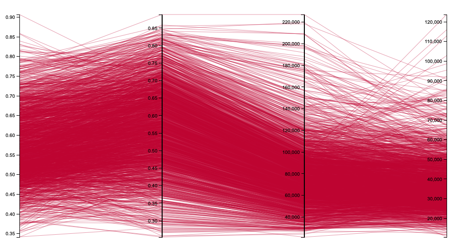

This would be an excellent place to describe what this page is for, what to find in different sections, describe any motivation or theme behind your visualizations, and so on.
You should not use this template unless you intend to customize it. Make it your own. Keep in mind this simple template is over 300 lines! You can see other examples of websites using Bulma at their showcase: bulma.io/expo/.
Data
Include some detailed information about the dataset here. You should add a link to the original dataset. You might also want to quote the license:
Put a citation here, possibly link to the dataset license information directly.
In addition to including a link to the source and license, you should describe the data. You might want a list of some sort to enumerate the different types of columns:
Kids Rank : Mean kid earnings rank with values ranging from 0 to 1
Parents Ranks: Mean parental income rank with values ranging from 0 to 1
Parents Average Income: Median parent household income (rounded to nearest $100) with values ranging from $20,000 to $230,000
Kids Average Income: Median child individual earnings in 2014 (rounded to the nearest $100) with values ranging from $0 to $130,000
Parallel Coordinates Plot in D3 v5
Ideally not everything would be on a single page like this example. Instead, you might want to put each section in its own webpage. You would need to carefully replicate the page template (with the header, navbar, and footer) and make
the necessary updates. For example, you want the "About" navbar item to be considered active on an "About" web page.
For now this is just a demo. The buttons below do not go anywhere, but can be easily changed to link to different visualization pages.
Prototype
Kids Rank Parents Rank Parents Average Income Kids Average Income

Grade
Letter
Done?
Description
D
Prototype and implement a bubble plot.
C
Prototype and implement a normalized heatmap.
B
Prototype and implement a small multiples visualization -or- both a bubble plot and heatmap.
A
Prototype and implement a parallel coordinates visualization -or- a scatterplot matrix (choose one).